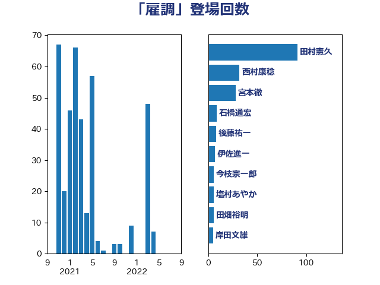

単語「雇調」

| 田村憲久 | 自由民主党 | 91 回 |
| 西村康稔 | 自由民主党 | 32 回 |
| 宮本徹 | 日本共産党 | 28 回 |
| 石橋通宏 | 立憲民主党 | 9 回 |
| 後藤祐一 | 立憲民主党 | 8 回 |
| 伊佐進一 | 公明党 | 7 回 |
| 今枝宗一郎 | 自由民主党 | 6 回 |
| 塩村あやか | 立憲民主党 | 6 回 |
| 田畑裕明 | 自由民主党 | 6 回 |
| 岸田文雄 | 自由民主党 | 5 回 |
| 武井俊輔 | 自由民主党 | 5 回 |
| 田村まみ | 国民民主党 | 5 回 |
| 音喜多駿 | 日本維新の会 | 5 回 |
| 福山哲郎 | 立憲民主党 | 4 回 |
| 落合貴之 | 立憲民主党 | 4 回 |
| 下村博文 | 自由民主党 | 3 回 |
| 倉林明子 | 日本共産党 | 3 回 |
| 小宮山泰子 | 立憲民主党 | 3 回 |
| 小池晃 | 日本共産党 | 3 回 |
| 山本剛正 | 日本維新の会 | 3 回 |
| 玉木雄一郎 | 国民民主党 | 3 回 |
| 福岡資麿 | 自由民主党 | 3 回 |
| 蓮舫 | 立憲民主党 | 3 回 |
| こやり隆史 | 自由民主党 | 2 回 |
| 三原じゅん子 | 自由民主党 | 2 回 |
| 大島敦 | 立憲民主党 | 2 回 |
| 山井和則 | 立憲民主党 | 2 回 |
| 川田龍平 | 立憲民主党 | 2 回 |
| 後藤茂之 | 自由民主党 | 2 回 |
| 杉尾秀哉 | 立憲民主党 | 2 回 |
| 泉健太 | 立憲民主党 | 2 回 |
| 石井苗子 | 日本維新の会 | 2 回 |
| 穂坂泰 | 自由民主党 | 2 回 |
| 菅義偉 | 自由民主党 | 2 回 |
| 赤澤亮正 | 自由民主党 | 2 回 |
| 近藤和也 | 立憲民主党 | 2 回 |
| 道下大樹 | 立憲民主党 | 2 回 |
| 里見隆治 | 公明党 | 2 回 |
| 高橋千鶴子 | 日本共産党 | 2 回 |
| 上田英俊 | 自由民主党 | 1 回 |
| 仁木博文 | 無所属 | 1 回 |
| 伊藤孝江 | 公明党 | 1 回 |
| 佐藤英道 | 公明党 | 1 回 |
| 加田裕之 | 自由民主党 | 1 回 |
| 原口一博 | 立憲民主党 | 1 回 |
| 古賀之士 | 立憲民主党 | 1 回 |
| 坂井学 | 自由民主党 | 1 回 |
| 宮内秀樹 | 自由民主党 | 1 回 |
| 山下芳生 | 日本共産党 | 1 回 |
| 山本香苗 | 公明党 | 1 回 |
| 工藤彰三 | 自由民主党 | 1 回 |
| 平木大作 | 公明党 | 1 回 |
| 朝日健太郎 | 自由民主党 | 1 回 |
| 木村次郎 | 自由民主党 | 1 回 |
| 柚木道義 | 立憲民主党 | 1 回 |
| 梶山弘志 | 自由民主党 | 1 回 |
| 森山浩行 | 立憲民主党 | 1 回 |
| 森本真治 | 立憲民主党 | 1 回 |
| 榛葉賀津也 | 国民民主党 | 1 回 |
| 橋本岳 | 自由民主党 | 1 回 |
| 河西宏一 | 公明党 | 1 回 |
| 浅野哲 | 国民民主党 | 1 回 |
| 浜口誠 | 国民民主党 | 1 回 |
| 稲富修二 | 立憲民主党 | 1 回 |
| 羽田次郎 | 立憲民主党 | 1 回 |
| 西田実仁 | 公明党 | 1 回 |
| 足立康史 | 日本維新の会 | 1 回 |
| 逢坂誠二 | 立憲民主党 | 1 回 |
| 遠藤敬 | 日本維新の会 | 1 回 |
| 階猛 | 立憲民主党 | 1 回 |
| 高木宏壽 | 自由民主党 | 1 回 |
| 高橋はるみ | 自由民主党 | 1 回 |